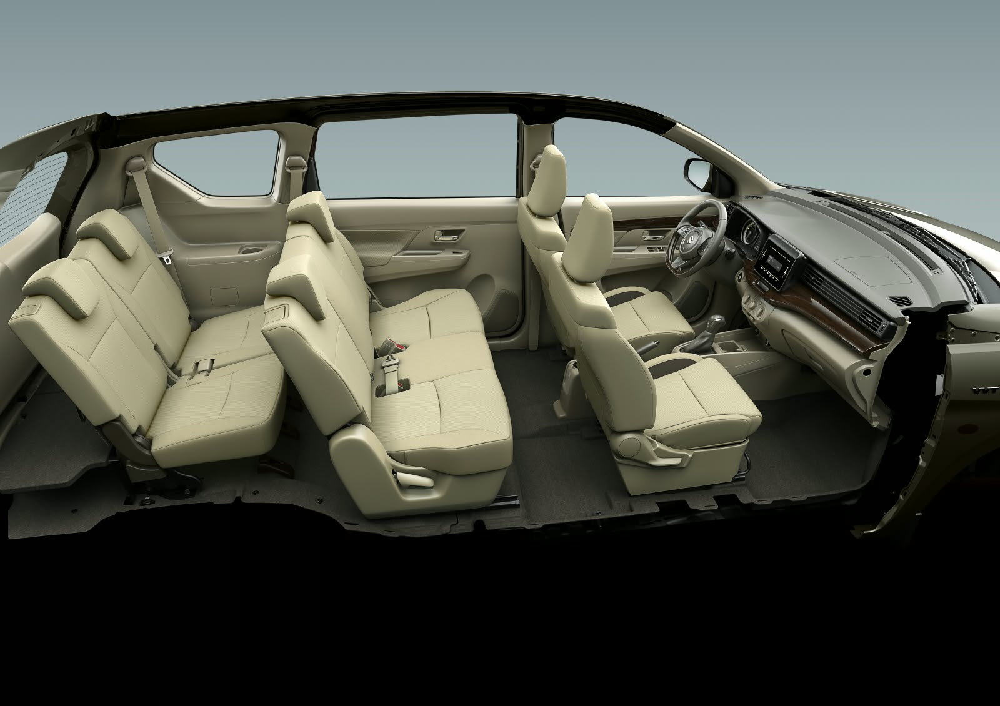

Pizarrón Semanal
0/0 (0%)Deck de Proyectos & Metas
13 proyectosControl de Tiempo
Bitácora de Hoy (Filtrar y Gestionar) Abierto por defecto • Toca para colapsar
Línea de Tiempo de Hoy
Historial de Jornadas & KPIs Analíticos Abierto • Indicadores diarios para diagnóstico y mejora
| Fecha | Sueño | Foco | Eficiencia | Pausas | Ocio | Ratio F/O | Calle | Rutinas | Diagnóstico |
|---|---|---|---|---|---|---|---|---|---|
| Cargando historial... | |||||||||
🎙️ Grabadora Fossify & Transcripción IA Subida y procesamiento directo
💡 Recordatorio rápido de flujo móvil (Fossify & Telegram)
En celular: Grabar en M4A con Fossify (15MB/hora) ➔ Menú ⋮ ➔ Compartir ➔ Seleccionar Bot de Telegram para ingesta automática sin cables.
Apuntes y Tareas de Clases
Oraciones SUD (Clic para copiar)
El Libro de Mormón — Mnemotecnia & Guía de Ministración
Otro Testamento de Jesucristo15 Libros • 239 Capítulos • 106 Temas Pastorales con Cita Exacta
Películas y Series
Chats de Antigravity (Historial Completo & Archivados)
Prompts de Inicialización del Sistema (10 Dominios)
Carisma & Comunicación Estratégica
Vanessa Van Edwards (Captivate & Cues) — Protocolos no verbales y frases de impacto.
🎧 Búsquedas Rápidas de Música para Programar y Prompts (1-Click YouTube Music)
Copia con un clic el término ideal o ábrelo directamente en YouTube Music según tu tipo de tarea prolongada.
🚀 Frases para Romper el Hielo (Reemplazo de Charlas Aburridas)
Sustituye preguntas piloto automático ("¿A qué te dedicas?") por detonadores de dopamina.
🔥 Frases de Química & Conexión Emocional Profunda
Ideales para citas y charlas donde buscas salir de la superficie y generar atracción genuina.
✨ Chispas Verbales (Palabras de Carga Sensorial)
Incorpóralas mientras escuchas para mantener alta la energía y atención de la conversación.
👥 Los 5 Arquetipos Narrativos (Roles de Vanessa Van Edwards)
Identifica la forma en que la otra persona ve su propia historia para resonar al instante.
1. El Héroe Ambicioso (*The Ambitious Hero*)
Narrativa de Redención & ConquistaVe la vida como metas y montañas por superar. Busca crecimiento, optimización y logros futuros.
💬 Frase para conectar: "¿Cuál es la gran meta que te quita el sueño de la emoción este año?"
⚠️ Qué evitar: Decirle que "se relaje" o restar valor a sus ambiciones.
2. El Pragmático Satisfecho (*The Contented Pragmatist*)
Narrativa de Mantenimiento & EstabilidadValora la estabilidad, el equilibrio y la eficiencia. Quiere que las cosas funcionen con tranquilidad y sin dramas.
💬 Frase para conectar: "Qué paz da ver a alguien que disfruta lo que tiene. ¿Qué rutina estás disfrutando más hoy?"
⚠️ Qué evitar: Forzar discursos hiper-competitivos o estresarlo con ambiciones innecesarias.
3. El Ayudante Desinteresado (*The Selfless Helper*)
Narrativa de Servicio & CuidadoSu identidad está en cuidar de su equipo, familia o amigos. Siente que hablar de sí mismo es "quitar".
💬 Frase para conectar: "Siempre cuidas de todos. Hoy quiero saber: ¿cómo estás TÚ realmente y qué te haría feliz a ti?"
⚠️ Qué evitar: Acaparar la conversación sin devolverle el micrófono a sus necesidades.
4. El Disruptor Creativo (*The Creative Disruptor*)
Narrativa de Subversión & InnovaciónCuestiona las normas y odia el status quo. Le gusta romper lo establecido y plantear ideas radicales.
💬 Frase para conectar: "Sé que odias las respuestas típicas. ¿Cuál es tu postura impopular sobre este tema?"
⚠️ Qué evitar: Imponer reglas rígidas o usar argumentos de autoridad tradicional.
5. El Luchador Desafortunado (*The Unlucky Struggler*)
Narrativa de Contaminación & VictimizaciónSiente que la mala suerte arruina sus planes (humor negro a lo George Costanza). Alta empatía pero baja autoestima.
💬 Frase para conectar: "Admiro cómo, a pesar de todo, mantienes ese sentido del humor tan fino. Aquí estoy para lo que sea."
⚠️ Qué evitar: Aplicar positividad tóxica o regañarlo intentando "arreglarlo".
🖐️ Lenguaje No Verbal & Señales Micro-Conductuales (Cues)
Dominio del cuerpo, voz y presencia para proyectar Calidez + Competencia al instante (Vanessa Van Edwards - Cues).
🎭 Monólogo Maestro de Oratoria: Hamlet ("To be or not to be")
Guía de estudio interactiva — Interpretación definitiva de Kenneth Branagh (1996) con guía fonética, pausas y memorización.
PARTE 1
⏱️ 0:00 - 0:35
La Pregunta e Intimidad Inicial
Susurro Resonante
To be, or not to be, that is the question:
Whether 'tis nobler in the mind to suffer
The slings and arrows of outrageous fortune,
Or to take arms against a sea of troubles
And by opposing end them.
• WUE-der tis NOU-bler in de MAIND tu SA-fer
• de SLINGS and A-rous ov aut-RÉI-djas FOR-tiun /
• or tu TEIK ARMS a-GEINST a SÍ ov TRA-bals /
• and bai o-POU-sing END dem.
Ser o no ser, esa es la cuestión: si es más noble para el alma soportar las pedradas y flechazos de la áspera fortuna, o armarse contra un mar de adversidades y, oponiéndose a ellas, darles fin.
T y P. Mirada fija en tus propios ojos.
PARTE 2
⏱️ 0:35 - 1:10
El Anhelo de Descanso
Melancolía & Exhalación
To die—to sleep,
No more; and by a sleep to say we end
The heart-ache and the thousand natural shocks
That flesh is heir to: 'tis a consummation
Devoutly to be wish'd.
• nou MOR // and bai a SLÍP tu SÉI wi END
• de HART-eik and de TAU-zand NA-tchu-ral SHOKS
• dat FLESH is ÉAR tu // tis a con-sa-MÉI-shan
• di-VAUT-li tu bi WISHT.
Morir... dormir, nada más; y decir que con un sueño ponemos fin al dolor del corazón y a los mil golpes naturales que hereda la carne, es una consumación deseada con devoción.
PARTE 3
⏱️ 1:10 - 1:45
El Giro Dramático / El Obstáculo
Pausa Total & Revelación
To die, to sleep;
To sleep, perchance to dream—ay, there's the rub:
For in that sleep of death what dreams may come
When we have shuffled off this mortal coil,
Must give us pause.
• tu SLÍP / per-CHANS tu DRÍM // ÁI / ders de RAB //
• for in DAT slíp ov DET / wuat DRÍMS mei KAM
• huen wi hav SHA-fald OF dis MOR-tal COIL /
• mast GIV as POS.
Morir, dormir; dormir, tal vez soñar. Sí, ahí está el obstáculo: porque en ese sueño de la muerte, qué sueños podrán venir cuando hayamos abandonado esta envoltura mortal, eso nos detiene.
PARTE 4
⏱️ 1:45 - 2:30
La Calamidad y la Pregunta Final
Proyección & Clímax
There's the respect
That makes calamity of so long life;
For who would bear the whips and scorns of time,
The oppressor's wrong, the proud man's contumely,
The pangs of disprized love, the law's delay,
The insolence of office, and the spurns
That patient merit of the unworthy takes,
When he himself might his quietus make
With a bare bodkin?
• dat MEIKS ca-LA-mi-ti ov sou LONG LAIF //
• for HU wuld BÉAR de HUIPS and SCORNS ov TAIM /
• di o-PRE-sors RONG / de PRAUD mans CON-tiu-mi-li /
• de PANGS ov dis-PRAIZD LAV / de LOS di-LÉI /
• di IN-so-lens ov O-fis / and de SPURNS
• dat PÉI-shent ME-rit ov di un-HWER-di TEIKS /
• huen HI him-SELF mait his cuai-Í-tas MEIK
• huith a BÉR BOD-kin?
Ahí está la razón que hace tan larga la vida de la calamidad. ¿Quién aguantaría los azotes y burlas del tiempo, las injurias del opresor, las afrentas del soberbio, los dolores del amor desdeñado, las tardanzas de la ley, la insolencia del poder y los desdenes que el mérito paciente recibe de los indignos, cuando uno mismo podría darse el remate con una simple daga?
MÉTODO
Plan de Entrenamiento en 4 Fases para Presentación en Vivo
Guía de Estudio
🚪 Simulador de Salida Elegante (*The Graceful Exit*)
Aplica la regla psicológica del Peak-End Effect: Señal Futura + Cumplido/Acción.
Traductor & Fonética (EN ↔ ES)
Últimas Búsquedas y Palabras Frecuentes
Centro de Operaciones & Auditoría Nocturna (06:00 AM)
Arbitraje de decisiones, memoria continua y aprobaciones de Rogerman.
📥 Bandeja de Decisiones Requeridas
Las propuestas se acumulan de forma persistente hasta tu resolución📜 Ver Historial de Acciones Resueltas y Bitácora del Sistema
Bandeja de YouTube
Corte diario 10:00 AM · Respaldo sincronizado en Segundo Cerebro
Cockpit de Pitch Comercial — Venta de Sitio Web con IA & Cotizador
Guía Rápida para Llamadas y Negociación con Jorge Mares Hernández (Sprinters, Suburbans, Vans) • CDMX & Foráneos
0. Discurso de Apertura & Autoridad Técnica
Estructura verbal de alta autoridad para la llamada inicial con el cliente.
0.5 Estrategia de Conversación: Los 4 Pasos Secuenciales de la Reunión
La estructura psicológica probada para conducir la llamada sin titubear y cerrar con autoridad.
1. Matriz Comparativa de Paquetes
Diferencias claras, tiempos de entrega y alcance de cada nivel.
Esencial
- ✅ Catálogo fotográfico HD: Galería de su flota real (Sprinter, Suburban, Hiace) con fotos limpias.
- ✅ Fichas técnicas simples: Capacidad real de pasajeros, maletas y amenidades (WiFi, A/C, pantallas).
- ✅ Botón directo a WhatsApp: Enlace flotante para que el cliente pregunte en un clic.
- ✅ Formulario de cotización básico: Solicitud tradicional por correo o WhatsApp.
- ✅ Carga ultra-rápida: Optimizado para celulares en menos de 1 segundo.
- ✅ 1 mes de garantía: Soporte técnico y cambios menores incluidos.
- ❌ Sin cotizador automático de precios
- ❌ Sin Inteligencia Artificial
- ❌ Sin panel de control interno
Pro
- ✅ Todo lo del Paquete Esencial.
- ✅ Cotizador interactivo en vivo: El cliente elige origen, destino, fechas, número de pasajeros y tipo de van.
- ✅ Cálculo de presupuesto estimado: Tabulado con las reglas de kilometraje o destinos fijos de Jorge.
- ✅ Ficha precargada a WhatsApp: Con 1 clic, Jorge recibe en su WhatsApp: 'Quiero cotizar Sprinter para 16 personas, CDMX-Acapulco, 15 al 17 Nov'.
- ✅ SEO Local en Google: Optimizado para búsquedas como 'Renta de Sprinters en CDMX' o 'Transporte ejecutivo eventos'.
- ❌ Sin IA conversacional abierta (usa listas y reglas fijas)
- ❌ Sin gestión de choferes o inventario
Elite + IA Concierge
- ✅ Todo lo del Paquete Pro.
- ✅ Asistente Virtual con IA (Gemini): Atiende a cualquier hora (incluso 2 AM). Entiende texto libre, responde sobre amenidades, equipaje y recomienda la unidad ideal.
- ✅ Cotizador Inteligente en Lenguaje Natural: Si el cliente escribe: 'Somos 14 y llevamos 8 maletas grandes a Querétaro', la IA le dice exactamente qué Sprinter le queda y cuánto cuesta.
- ✅ Handoff Automático a WhatsApp: Si piden una ruta especial con paradas intermedias, la IA empaqueta el itinerario y le dice al cliente: 'Te acabo de transferir con Jorge a WhatsApp con tus datos listos'.
- ✅ Experiencia VIP Concierge: Diseño y nivel idéntico o superior a Mexitours.
- ⭐ Máxima tasa de conversión y diferenciación frente a la competencia
1.5 Cronograma de Entregas & El Prototipo en 5 Días (¿Cómo Funcionan los Tiempos?)
Por qué el prototipo en 5 días está DENTRO del plazo total y cómo elimina el riesgo para el cliente.
| Hito / Fase del Proyecto | Paquete Esencial ($14.5k) | Paquete Pro ($24.5k) | Paquete Elite + IA ($34.5k) | Pago Asociado |
|---|---|---|---|---|
| 1. Inicio & Carga de Fotos / Flota | Día 1 a 2 | Día 1 a 2 | Día 1 a 2 | 50% Anticipo al firmar |
| 2. Entrega de Prototipo Funcional | Día 5 hábil (Demo privado) | Día 5 hábil (Demo privado) | Día 5 hábil (Demo privado) | 25% contra aprobación de diseño |
| 3. Calibración Técnica & Algoritmos | Revisión de textos y dominio | Programación de cotizador y rutas | Entrenamiento de la IA y Handoff | En proceso de afinación |
| 4. Entrega Final & Lanzamiento Web | 7 días hábiles totales | 12 a 15 días hábiles totales | 18 a 20 días hábiles totales | 25% Final contra entrega a satisfacción |
2. ¿Cómo Opera la IA de Ventas y el Handoff a WhatsApp? (Flujo Operativo)
El mecanismo que resuelve la duda de Jorge sobre presupuestos en vivo y rutas no contempladas.
3. El Panel de Control / Administración de Flota (Respuesta a la Duda de Jorge)
¿Viene incluido en los paquetes? ¿Cómo plantearlo y cómo usarlo como arma de cierre?
📌 Situación Real & Respuesta a Jorge:
Jorge le preguntó a Efraín si el panel de control (donde se ve qué camioneta está disponible, qué viajes se tienen, etc.) estaba incluido en la propuesta y Roger le dijo que no. Esto es 100% correcto: Una página web pública es para que los clientes compren, mientras que un Panel de Administración de Flota es un software interno privado (mini ERP de logística).
🍎 Aclaración con Peras y Manzanas para Roger:
Es lo que ve la gente en internet (
www.transportesjorge.com). Es la fachada comercial: fotos, cotizador para el cliente y botón para pedir viajes por WhatsApp. Esto viene en los 3 paquetes.
Son exactamente lo mismo. Es una pantalla secreta con usuario y contraseña (
admin.transportesjorge.com) solo para Jorge y su secretaria. Ahí ve qué chofer tiene qué Sprinter, qué unidades están en taller y cambia precios. NO viene en Esencial ni en Pro (vale $8,000 extra), pero se le regala en el paquete Elite ($34.5k) como gancho de cierre.
- Semáforo de Flota: Ver en pantalla qué camioneta está 'Disponible', 'En Viaje' o 'En Taller / Mantenimiento'.
- Calendario de Salidas: Ver los viajes de la semana, fechas de regreso y qué chofer está asignado.
- Ajuste de Precios sin Programar: Una pantalla donde Jorge puede cambiar el precio de Acapulco o el costo por km sin llamarle a nadie.
- Acceso seguro con contraseña: Solo para Jorge y su secretaria o asistente.
- Opción A (Como Módulo Extra): Se cotiza por separado en +$8,000 MXN sobre el paquete Pro o Esencial.
- Opción B (Arma de Cierre Magistral): Si Jorge duda en contratar el paquete Elite de $34,500, Roger le dice: 'Jorge, si cerramos el paquete Elite esta misma semana, te regalo e integro el Panel de Control de Flota sin cobrarte un solo peso más (te estás ahorrando $8,000 de desarrollo)'.
4. Módulo Futuro: Contabilidad & Declaración SAT con OCR (Roadmap Fase 2)
Cómo explicarle la visión a futuro de digitalizar facturas de gasolina, casetas y deducciones.
En el sector de transportación de pasajeros, el dolor de cabeza número uno son las facturas de gasolina, tickets arrugados de casetas y viáticos de los choferes. Un módulo OCR permite que el chofer suba una foto del ticket desde su celular, la IA extraiga el RFC de la gasolinera, litros, IVA y IEPS de combustible, y lo mande directo al reporte contable.
- Subida de Fotos / XML: Chofer toma foto del ticket de caseta o gasolina al terminar el viaje.
- Extracción OCR + IA: Lee fecha, RFC emisor, folio fiscal, importe total y desglose de IVA/IEPS.
- Asignación por Camioneta: Cada gasto queda amarrado a la Sprinter correspondiente para saber la rentabilidad real de cada viaje.
- Reporte para Contador: Genera archivo Excel y resumen listo para la declaración mensual del SAT.
- No venderlo hoy como parte del desarrollo inicial: La prioridad de Jorge este viernes es vender viajes y tener presencia digital.
- Plantearlo como Fase 2: Dejarle la espina sembrada diciéndole que la arquitectura de su sitio web queda lista para conectarle este módulo el próximo año.
- Modelo de Negocio Recurrente: Este módulo se vende como servicio mensual de mantenimiento y contabilidad digital ($1,500 a $2,500 MXN al mes).
5. Requerimientos de Información (Entregables de Jorge)
Los 4 bloques de datos y fotos que deben solicitarse en la reunión.
- [ ] Foto exterior 3/4 frontal limpia (con luz de día, sin sombras duras).
- [ ] Foto exterior lateral completa.
- [ ] Foto interior de los asientos de pasajeros (mostrando piel/vestiduras).
- [ ] Foto de amenidades (pantallas, espacio para maletas, cargadores USB).
- [ ] Marca, Modelo y Año (ej: Mercedes Sprinter 2022, Suburban 2021).
- [ ] Capacidad máxima de pasajeros cómodos (ej: 17 personas + chofer).
- [ ] Capacidad de equipaje (ej: 15 maletas de 20kg + equipaje de mano).
- [ ] Amenidades oficiales (WiFi a bordo, A/C doble, sonido Bluetooth, conectores).
- [ ] Precios fijos para los 5 viajes más comunes (Acapulco, Querétaro, Puebla, Toluca, AICM/AIFA).
- [ ] Costo base por kilómetro o por día de servicio con chofer.
- [ ] Qué incluye la tarifa (¿Combustible? ¿Casetas? ¿Hospedaje del chofer en foráneos?).
- [ ] Porcentaje de anticipo requerido para apartar fecha (ej: 20% o 50%).
- [ ] Número de WhatsApp Business oficial donde caerán los prospectos calificados.
- [ ] Logotipo actual o nombre comercial registrado.
- [ ] Domicilio o base de operaciones en CDMX para el mapa de Google.
- [ ] Horarios de atención telefónica para soporte de choferes.
6. Respuestas a Objeciones de Jorge (Guión para Hablar por Teléfono)
Argumentos probados para resolver sus dudas sobre el coche chico, la impresión negra y el precio.
7. Ficha Identificativa: El Vehículo del Chat de Efraín (Aclaración Fotográfica)
Identificación del modelo de las imágenes para no confundirlo jamás con la flota de Jorge.

🔍 Origen de la Confusión:
1. Jorge Mares trabaja o trabajó como asesor en la agencia Suzuki (por eso el contacto en WhatsApp dice 'Jorge Mares Hernández Suzuki'). Efraín le compró una Ertiga hace tiempo.
2. El 26 de septiembre, Efraín le mandó a Roger esta foto de corte del interior preguntando si cabían 3 personas por fila en la Ertiga.
3. Por error, esa duda se mezcló con la propuesta de Jorge, y Jorge pensó que le estaban ofreciendo una página para una 'camioneta chica de 3 pasajeros'.
4. La Flota Real de Jorge: Es transporte ejecutivo (Mercedes-Benz Sprinter de 17-20 pasajeros, Chevrolet Suburban de 7 pasajeros VIP y vans ejecutivas).
8. ¿Es la IA lo más difícil de una página? & Renta Directa con Tarjeta
Conceptos clave para que Roger entienda el alcance técnico y comercial de cada función.
Técnicamente no es difícil conectarla: Hoy en día conectar un modelo de Google (Gemini Flash) con API toma solo unas líneas de código.
Lo verdaderamente difícil es el MODELADO DE LAS REGLAS DE NEGOCIO: Calibrar el prompt para que la IA no alucine precios, no prometa camionetas inexistentes y sepa cuándo parar y pasarle la estafeta a Jorge por WhatsApp. Por eso se cobra $34,500, porque es consultoría de ventas y blindaje comercial, no solo código.
Sí se puede agregar fácilmente (con Stripe, Clip o MercadoPago para cobrar un 20% de apartado).
Pero en transporte ejecutivo en México: El 85% de las empresas y familias que rentan una camioneta para Acapulco o Querétaro NO meten su tarjeta de crédito en una web desconocida por $20,000 pesos de golpe. Prefieren hablar por WhatsApp, verificar que la empresa existe y hacer transferencia SPEI. Por eso, el flujo IA ➔ WhatsApp cierra 3 veces más ventas que una pasarela fría.